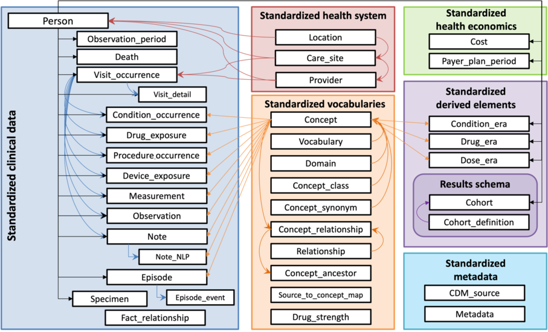
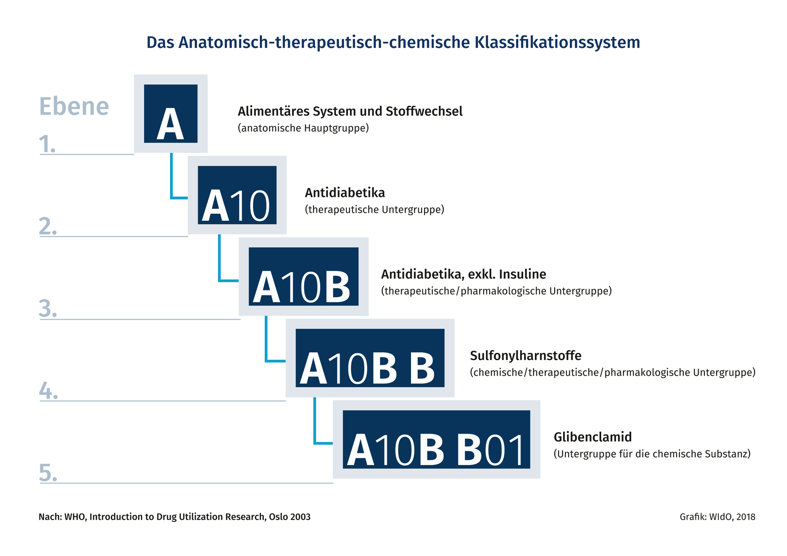
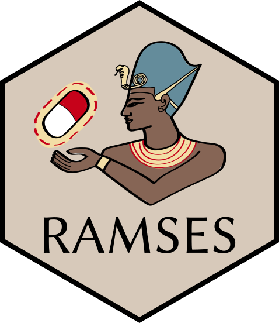

ARC I&A June 2025
2025-06-25
The Observational Medical Outcomes Partnership is a public-private partnership that aims to improve the quality of observational research. OMOP provides a standardized data model and common data elements to facilitate the sharing and analysis of healthcare data across different organizations.
OMOP’s Common Data Model (CDM) is an open community data standard, designed to standardize the structure and content of observational data and to enable efficient analyses that can produce reliable evidence.

Common Data Model
Defined Daily Dose is a unit of measurement used to quantify the amount of a drug that is typically prescribed for a specific condition. It is often used in pharmacology and healthcare research to standardize the measurement of drug consumption.
It is defined by the World Health Organization (WHO) and is based on the average maintenance dose of a drug for its main indication in adults. It allows for comparisons of drug usage across different populations and settings.
Anatomical Therapeutic Chemical is a classification system, the active substances are divided into different groups according to the organ or system on which they act and their therapeutic, pharmacological and chemical properties. Drugs are classified in groups at five different levels


https://github.com/SAFEHR-data/drugsatc
From OMOP to DDD: https://razekmh.github.io/talks